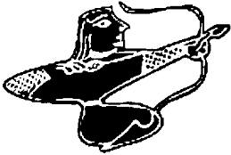

Tankut, biraz önce aşağıda cereyan eden dehşeti anlamakta güçlük çekiyor, Argun Bey’in uyarılarını hiç takmayıp Albız’ı çağırdığı için kafasını duvarlara vuruyordu. Çiçek, televizyonun karşısına geçmiş, bir yandan program arıyor bir yandan da söylenip duruyordu. Neden sonra Tankut, telefonunu açıp polise bir ihbar bıraktı. Serseri bir canavarın İstanbul sokaklarında sağını solunu yıka döke dolaştığını söyledi. Karşıdan kibar bir ses, “Beyefendi onu bilmeyen mi kaldı? Deprem canavarı en son Altıntepe taraflarında görülmüş” dedi ve kapamak istedi. Tankut,
“Durun, durun lütfen, ben onun zayıf noktasını biliyorum,” dedi, “su dökmek gerek üstüne ki, küçülüp daralsın. Eski hali neyse ona dönsün. Aman ateş açmayın, hele ağır silahlan hiç kullanmayın.”
İsmini Argun Afaki olarak verdi. Telefon zaten Argun’un üstüne kayıtlıydı. İçi biraz rahatlamış bir şekilde yerine oturdu. Kendi haber televizyonuna baktı.
Bütün kanallarda, Avcılar’daki küçük, fakat bine yakın can alan depremden ve deprem olduğu sırada yeryüzüne çıkan kırmızı, iriyarı bir canavardan söz ediliyordu. Birinde amatör bir kamerayla tepeden çekilmiş, silik, titrek görüntüler üst üste yayınlanıyordu. Burada gerçekten de Albız yeraltından çıkıyormuş gibi duruyordu. Küfretti. Bu filmi çeken insanın Albız’ın düşüşünü gördükten sonra kamerasına sarılmış biri olduğu ve çevredeki yıkılmayan evlerden birinde yaşadığı çok açıktı. Adam o düşüş anını görmüş, kamerası boynunda dolaşmadığı için doğal olarak çekememiş, ancak Albız’ın çukurdan çıkışını çekebilmişti.
Diğer kanala geçince olduğu yerde sallandı. Tavramina, iki gözü iki çeşme ağlıyordu:
“Kocamı bulun, kocamı bulun! Babamı o canavarın etkisi altında öldürdüğünü sanıyorum!”
Futbol konuşan kadrolar gitmiş, onların yerini hemen her kanalda depremciler, şeytan çıkaranlar, cinciler, kabalacılar almıştı. İslamcımsıtrak kanallardan birinde ise bunun Amerika’nın bir işi olduğu tezi ustalıkla irdeleniyor, Amerika’nın elinde bu tip kırmızı deprem canavarlarından daha birkaç yüz adet olduğu kanıtlarıyla gösteriliyordu. Irak savaşında yeterli destek vermeyen ülkelere bu canavarlardan bir adet gönderiyormuş Amerika. Tankut, bu kanıtları ilgiyle izledi. Hollywood’un ne kadar bilimkurgu, korku, uzay filmi varsa onlardan makaslanan ve birbirine hiç benzemeyen bir sürü yaratığın kırmızı bir fon üzerinde bulanıklaştırılmış görüntülerine bakarken tüm kişisel sıkıntılarını unutarak ağız dolusu küfretti. Aralarında bir de çizgi film karakteri vardı.
Diğer bir kanalda ise son derece ciddi bir adam, büyük bir olasılıkla bir depremci olduğunu düşündüğü, sonradan bir medyum olduğunu anladığı biri, büyük bir otoriteyle,
“Albız, maalesef bizim ülkemizin bir gerçeği. Albız’la yaşamayı öğrenmek zorundayız. Korkacak bir şey yok. Bu tip şeytanların veya cinlerin 4.5-5 şiddetinden fazla depremler üretmeleri mümkün değildir!” diyor ve sonra büyük adamlardan öğrenilmiş, büyük bir otoriteyle “halkımız müsterih olsun!” diye ekliyordu. Başka bir kanalda ise bunun Sabetayistler arası bir iç çekişmeden kaynaklanan bir felaket olduğu, oganların diğer grubu temizlemek amacıyla bir Albız’ı cehennemden çağırdıklarını, sonra çarşafa dolaştıklarını işleyen bir haber vardı. “Ulan iyice suyunu çıkardılar, biz de bu Unomastik dalgasıyla besledik bu zırvalıkları” diyerek kanal değiştirmeye davrandı. Gül ve Rüstem’in yüzlerini görünce durdu. İkilinin sözcüsü durumunda olan Gül, sakin bir sesle konuşuyordu:
“Son zamanlarda Argun Bey ve yeğeni Tankut Bey kendilerinin de Sabetayist olduğunu keşfetmişler, kamuya bir açıklama yapmak için hazırlanıyorlardı. Sonra o müessif hadise oldu! Rakip grubun cinayeti işleyip Tankut Bey’e yıktıkları kanaatindeyiz. Kendisi karınca incitmez bir yapıya sahiptir. Neyse... elimde Argun Bey’in öldüğü gün tuttuğu notlar var, onları okuyunca her şey anlaşılıyor...”
Kamera, Gül’ün elinde tuttuğu bir not kartına odaklanıyor. Afaki’nin o hızlı, akıcı el yazısı hemen tanınıyor. “Demek biz de Yahudi’yiz, tarihin akışı bizi ilginç bir noktaya getirdi!”
Tankut Argun, tam da o noktada Çiçek’in televizyonunu izlemeye, o saflara katılmaya karar verdi. Kız bu iltihaka candan memnun oldu. Ellerini çırparak sevinçle haykırdı:
“Hoş geldin Tankut’um! Bak yeni bir yarışma buldum!”
Albız, Yarım Burgaz Mağaralarında bir saatlik derin bir şekerleme yaptıktan sonra dışarı çıktı. Başının üstünde bir helikopter uçuyordu. Albız’a doğru bir dalış yaptı makine. Hiç umursamadı Albız. Sonra başından aşağı soğuk sular dökülünce neye uğradığını anladı. Yangın söndürme helikopterleriyle saldırıyorlardı. Attığı çığlık kilometrelerce öteden duyuldu. Allahtan elde pek az olan helikopterlerden ancak biri iş başındaydı. Acıdan kıvranan Albız ne tarafa kaçtığına bakacak durumda olmadığı için Kayabaşı köyü yoluna saptı. Köyün dışına kaçak moloz döken bir kamyonu molozuyla birlikte emdi. Sürücüsünü tükürdü. Boş bir traktör ile çarpışıp onun da bir kısmını bünyesine aldıktan sonra köyü geride bıraktı.
Bir yol ayrımına geldi. Aşağıda batmakta olan güneş, Sazlıdere Barajı’nın suları üzerinde altın yansımalar yapıyordu. “Beni suyun yanında aramak akıllarına gelmez” diyerek sola, baraja doğru inmeye başladı. Hızla, yarı metruk Şamlar köyünü geçti. Köyün II. Mahmut döneminde yapılmış ve geçenlerde yanmış olan ilkokulunun köşesini döndü. Sol yaptı. Barajın çevresindeki toprak yolu dolaşmaya başladı. Karşıdan gelen bir araçtaki insanlar tarafından görülmemek için tarlaların arasına daldı. Beş altı kilo metre gittikten sonra gölün ortasında, üzerinde terk edilmiş tek bir ev bulunan adacığın karşısındaki taşocağına sığındı.
Büyük bir taş blokun arkasına gizlendi. Mesaiyi bırakmak üzere olan işçilerin gidişini bekledi. Karanlıkta izini kaybetmişlerdi. Büyük bir enerjiyle iri beyaz taş blokları üst üste koyarak kendine görkemli bir sığınak yapmaya girişti. Piramit biçiminde, üstü kapalı, yüksek tavanlı bir ev yaptı. Şimdi tepesinden aşağı sular dökemezler, dökseler de büyük bir zarar veremezlerdi. Burada oturur, saldırıları savuşturur, eğer dedikleri gibi bir uzaylıysa, bir uçandaire göndererek kendisini almalarını beklerdi. Değilse de kader! Her şeyi bilen Albız, kim olduğunu bilmiyordu!
Birden, en az on metre yüksekliğindeki tavandan alnına iri bir damla düştü. Küçük bir çığlık attı. Kapalı yerde, bunun bir sağanağın ilk ve aceleci damlası olduğu aklına gelmedi. Taşlardan süzülen bir su olduğunu düşündü. Büyük bir ateş küresi yaparak evinin içini aydınlattı. Taşlara ustaca tırmanarak ışığını tavana sabitledi. Sonra kendisini sersemleten bir sağanak yağmur başladı. Fındıktan cevize, değişen irilikte düşen buz gibi taneler gövdesine makineli tüfek mermisi gibi iniyor, bazıları klipaların arasında yol bularak vücudunun derinliklerine iniyor. İçerde buharlaşıp patlayarak onulmaz azaplar, acılar çekmesine neden oluyordu. Gücü azalıyordu, bunu kimin yaptığını bilmiyordu. Bir dünyayı daha Altın Çağ’dan kurtarmanın ödülüydü bu. Anlaşılan o ki, fazla açılıp saçılan, bilinç kazanan maddenin küçülmesi, eski bilinçsiz haline dönüşmesi gerekiyordu.
Yere düştü. Küçülüyordu. Böyle giderse var olması mümkün değildi. Yok olmak üzereydi. Madde tam bilincini yitirmek üzereyken, tavandan düşen ışığın gövdesine saplanması Albız’a yeni bir güç verdi. Ruhuna bir sıcaklık yayıldı. Ayağa kalkarak, içinde tekrar tutuşan, ısınan maddeyi büyüttü. İrileşti, devleşti, üzerini kaplayan, her biri üçer beşer tonluk kesme taştan kayaları sağa sola savurdu.
Yağmur biraz etkisini yitirmiş gibiydi. Bazen olaylar gelişirken işe karışan, pek dile getirilip tanımlanamayan, günümüz tarihçilerince varlığı bile inkâr edilen, fakat geçmişteki bazı tarih filozoflarının “görünmez el” diye adlandırdıkları bir el, “görünen el” diye bilinen ve üzerinde pek teori üretilmeyen diğer elinin tuttuğu yeşim renkli yarımküreyi bir kez daha okşadı. Ellerin kısık, çekik, gök gözlü sahibi, Argun Afaki’nin on iki yıl önce almadığı ve kendisinin bir çöplükte bulduğu Yada Taşı’na şefkatle baktı.
Albız biraz soluklanacağını düşünürken bu kez gök delinir gibi bir yağmur başladı. Üzerindeki kayaları dağıtarak açıkta kalmasının planlanmış bir oyun olduğunu anladı. Gücünün son damlasını bağırmak için harcamadı. Hayal Taşı’nı kurtarmak gerektiğini biliyordu. Sağ pençesini kamına soktu. Kendisine müthiş acılar veren birkaç dolaşmadan sonra taşı buldu. Çekti. Var gücüyle göle doğru savurdu. Taş elli santim kadar havada uçtuktan sonra yumuşacık çamurun üstüne kondu. Albız, her biri yirmişer litrelik buz gibi su damlalarının etkisi altında çöktü. “Şimdi bunların çukur semtlerde oturanlarının evlerini su basmıştır. Bodrum katlarında yaşayan siyah zeytin gözlü çocuklar sudan kaçamamıştır” diye düşündü, iyice üzüldü. Yada Taşı’nın ne kadar dar bir alanda yağmur yağdırabileceğini bilmiyordu. Bu suçluluk duygusuyla iyice küçüldü. Annelerinin karnında bebek albızlar nasıl durursa öyle yan döndü, bir ceninmiş gibi başparmağını emmeye başladı. Sonra daha da küçüldü, daha da geriye gitti. Taşkınlık yapan bir madde olarak eski boyutlarına indi. Basit, siyah bir volkan camı haline geldi. Meraklı birileri çıplak gözle bile bu volkan camının burada ne kadar aykırı durduğunu hemen anlardı.
Yağmur aniden kesildi. Dikkatle bakan bir göz, baraj seviyesinde on santimlik bir artış görebilirdi. Ertesi gün, her günkü gibi Dobruca Tatar muhacirlerinden balıkçı İbrahim Amca’ya selam vererek işbaşı yapan işçiler ortada bir gariplik sezdiler. Ağır kaya blokları dünkü yerlerinde değildi. Taşocağından baraj gölüne akan dehşetli seller büyük yarıklar yaparak toprağı yarmıştı. Biri sordu:
“Amca akşam burada ne oldu?”
Balıkçı İbrahim, kaya bloklarının arasında, çamurların içinde biraz önce bulduğu lacivert renkli güzel taşı bir tespihmiş gibi parmağında sağa sola çevirerek,
“Çok yağmur yağdı oğul çok!” dedi. Doğru, yağmıştı. Bir işçi ilk durumuna dönen ve artık kara, parlak bir taştan başka bir şey olmayan Albız’ı yerden aldı. İnceledi.
“Yav küçük bir adam heykeli gibi bu kara taş!” dedi. Diğeri,
“İbrahim’e göster. O böyle taşları sever. Hayatı taş peşinde koşmakla geçti” dedi.
“Bırak ya, boş ver şimdi. O rakısını içsin. Taştan ne anlar o!” diyen adam, minik taş Albız’ı suyun yüzünde tam üç kez sektireceğine dair yanındakiyle iddialaştı. Eski alışkanlıklarından ötürü, taşın önce korkudan içi titredi. Sonra, hızla yitip gitmekte olan Albızlık bilincinin son kırıntılarıyla düşündü: “At gitsin evlat. Kuru taşa ne olur? Taş dediğin daha kaç defa Albız olur? Bizimki de bir maceraydı. Yaşandı bitti.” Bir taş olduğu için, nasıl umarsız, nasıl acımasız, nasıl başsız ve sonsuz bir hapishanenin içinde olduğunu düşünmedi.
“Seyret amca,” diyerek İbrahim’e seslendi adam. Taş, suyun üzerinde tam üç kez sekti. İbrahim ayağa kalktı seslendi:
“O da bir şey mi? Ben şu elimdeki delik taşı tam dokuz kez sektirecem! Var mısınız iki şişe rakısına?”
“Varız varız!”
İbrahim eğildi, suya paralel bir hal aldı. Sağ kolu gerildi. Nice ellerde fırıldak olan Hayal Taşı döne döne suyun yüzüne çarptı kalktı. Sonra kalktı, tam sekiz kez daha çarptı.
“Oha!”
“Nasıl yaptın bunu be?”
“Hayal etmeyi bilecen oğlum, hayal etmeyi!”
SON